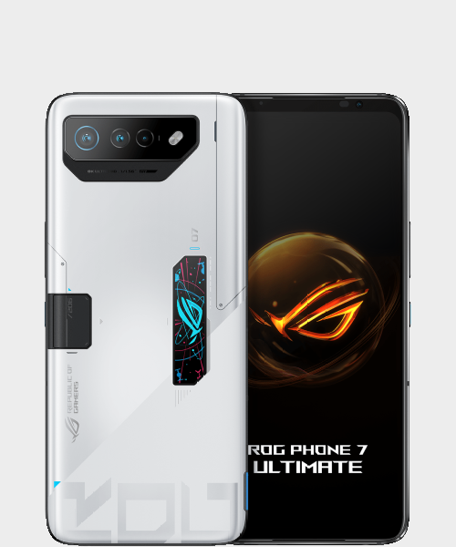

|
Headphones are personal audio devices worn over or in the ears. They convert electrical signals into sound waves, allowing a single user to listen privately to music, calls, or other audio without disturbing others. They come in various styles (over-ear, on-ear, in-ear) and can be wired or wireless (Bluetooth). |
 |
A laptop is a portable personal computer featuring a clamshell design, with a screen in the upper lid and a keyboard/pointing device in the lower. It integrates all essential components (processor, memory, storage) into a single unit, powered by a rechargeable battery or AC power. Laptops offer mobility and versatility for work, study, and entertainment. |
|  |
A mobile phone (or cellphone) is a portable electronic device that allows users to make and receive calls wirelessly. Modern smartphones, its advanced form, integrate extensive computing capabilities, including internet access, apps, cameras, and multimedia functions. They are essential tools for communication, information, entertainment, and productivity, connecting people globally from Greater Noida and beyond. |